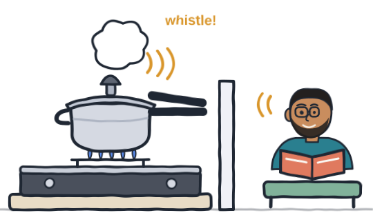
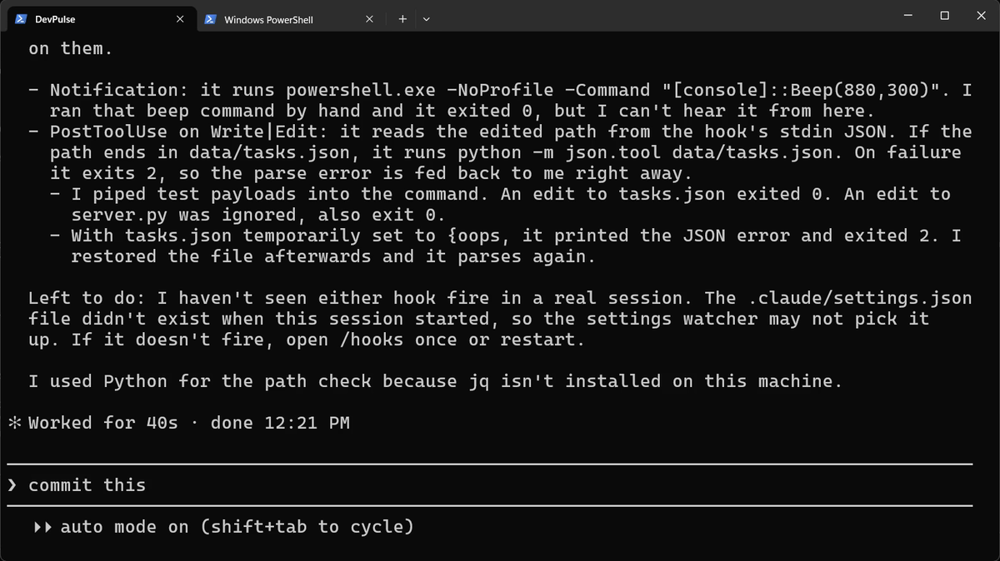
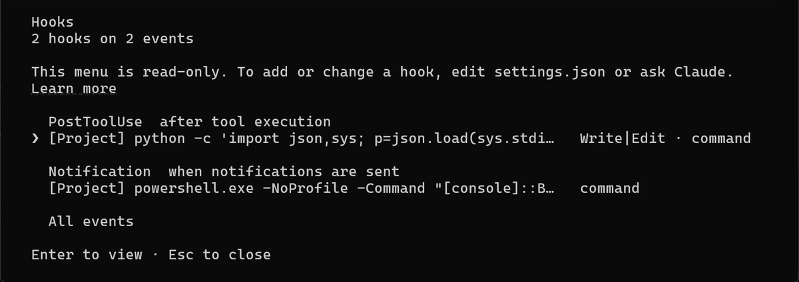
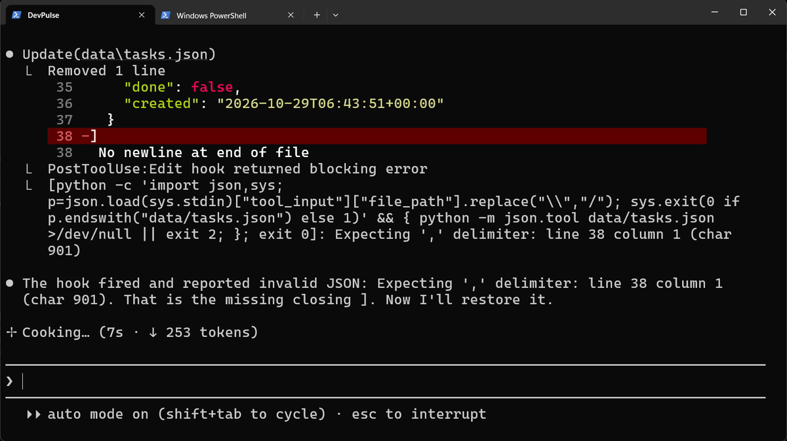
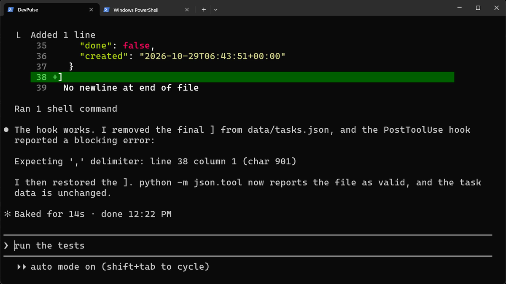
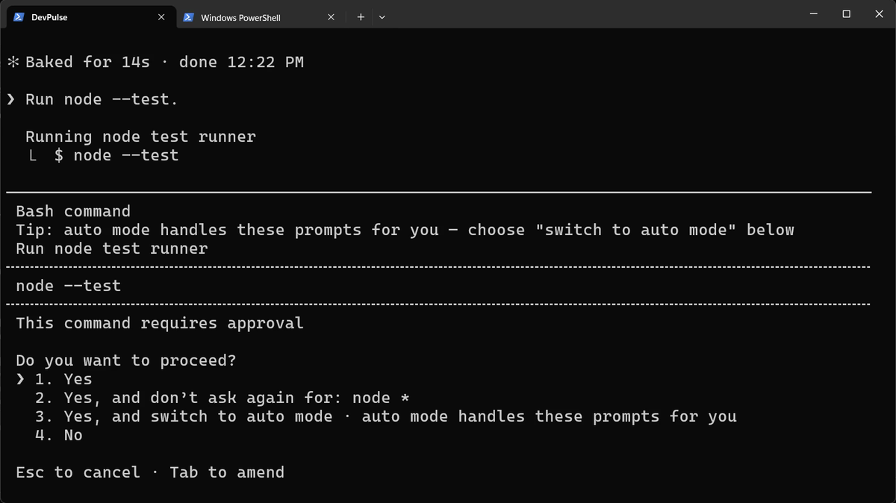
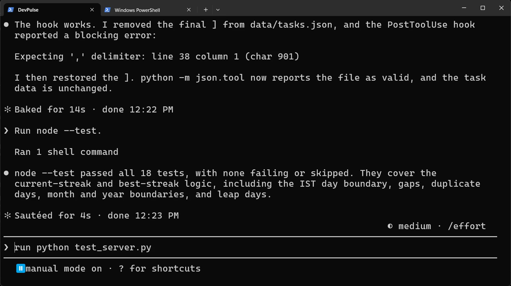

Prefer to watch? This chapter goes with Episode 13 (5:18). Open it on YouTube.
data/tasks.json and 18 tests.Watching the terminal
Say Claude is working and you switch to your browser. A minute later you look back. It has been waiting for your yes the whole time.
There is a second job too. When Claude edits data/tasks.json, nobody checks that it is still valid. One missing bracket breaks it.
Think of a pressure cooker on the stove. Nobody stands next to it, counting the minutes. When the pressure is up, the cooker whistles by itself, and only then do you walk back. That whistle is what we want from Claude.

How do you make Claude Code beep when it needs you, so you can stop watching the terminal?
What a hook is
Claude Code calls this a hook: a command that Claude Code runs by itself when something happens. You don't ask each time. That something is called an event.
| Event | When it runs | Our hook |
|---|---|---|
Notification | Claude needs you, for example to approve a command | Beep |
PostToolUse | Right after Claude uses a tool, such as Edit | Check that data/tasks.json is still valid JSON |
Ask Claude to write both hooks
Hooks live in a settings file. The project one is .claude/settings.json, so the whole team gets them.

Look at one detail. On a broken file, the check exits 2. Exit code 2 tells Claude Code to send the error back to Claude, so Claude sees it at once.
Its own test even broke our real tasks file for a moment (temporarily set to {oops), then put it back. Our tasks were fine afterwards.
Restart, then check they are on
The settings file did not exist when this session started, so Claude suggests a restart. Type /exit, then claude.

Break the file on purpose
A hook you have never seen fire is only a hope. So test it.


Make Claude need you
Now the beep. It plays when Claude waits for you, so we need a command that asks first. Press Shift+Tab until you see manual mode.

[console]::Beep(880,300) in the hook.Switch to another window before you send the line. When Claude asks, you hear the beep and come back.

Now you can look away. You'll hear when Claude needs you, and a broken tasks file is caught at once.
What hooks cost
A hook runs every time its event happens. Our check runs after every edit, so keep it fast. A slow hook slows down every step.
Hooks also run with your permissions. A project you clone can bring its own hooks in .claude/settings.json. Read that file before you trust the folder.
DevPulse now watches itself, but it all stays on your laptop. In the next chapter, a page of DevPulse goes on the internet, showing only the tasks you choose to share, on GitHub Pages.
Quick reference
The prompts from this chapter, ready to copy: every prompt, chapter 13.
| Command or key | What it does | Use it when |
|---|---|---|
Add a Notification hook … that beeps when you need me | Plays a sound whenever Claude waits for you | You work in another window while Claude runs |
Add a PostToolUse hook that runs … after any edit to … | Runs your check every time Claude edits that file | A file must never be left broken |
/exit, then claude | Restarts Claude Code so new hooks load | You just added or changed a hook |
/hooks | Lists your hooks by event (read-only) | You want to see which hooks are on |
exit 2 | In a hook command: blocks and sends the error to Claude | Claude should see the problem and fix it |
A hook for the file you care about most
The goal: a check that runs after every edit to one important file, without you asking.
The steps: pick a file in your project. Ask: Add a PostToolUse hook to .claude/settings.json that checks … after any edit to it. Restart, open /hooks, then break the file on purpose.
Guess first: if your check exits 1 instead of 2, will Claude still see the error?
One question for you: what do you check by hand after every change, that a hook could check for you?
References
Where each command and file on this page comes from. Every screenshot is from our own recording on 29 Oct 2026, Claude Code 2.1.312.
- Anthropic · Get started with Claude Code hooks What hooks are for, with a notification example. https://code.claude.com/docs/en/hooks-guide
- Anthropic · Hooks reference The events (Notification, PostToolUse), matchers, the JSON a hook reads, and what exit code 2 does. https://code.claude.com/docs/en/hooks
- Anthropic · Claude Code settings The settings files: user, project (.claude/settings.json) and local. https://code.claude.com/docs/en/settings
- My own recording · 29 Oct 2026, Windows 11 Both hooks were written in 40 s; the check caught the missing ] at line 38; the beep played; a screen recording does not catch sound, so the video adds the same tone (880 Hz, 0.3 s).
New chapters and episodes come out every week. Follow along on YouTube or the WhatsApp channel. Questions? Ask under the video on YouTube; I read every comment.